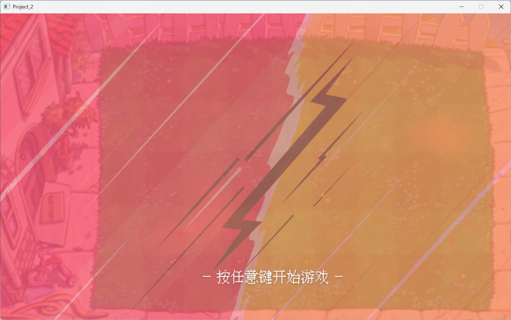
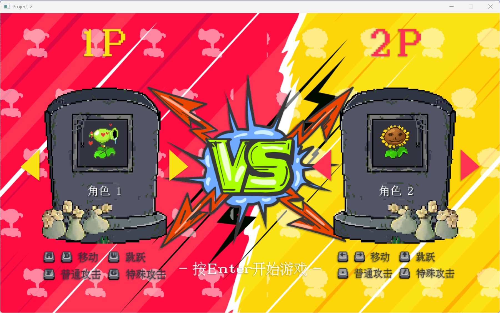
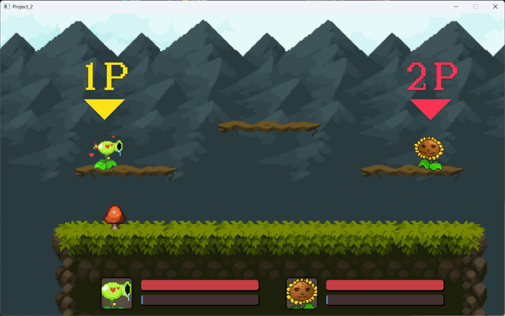
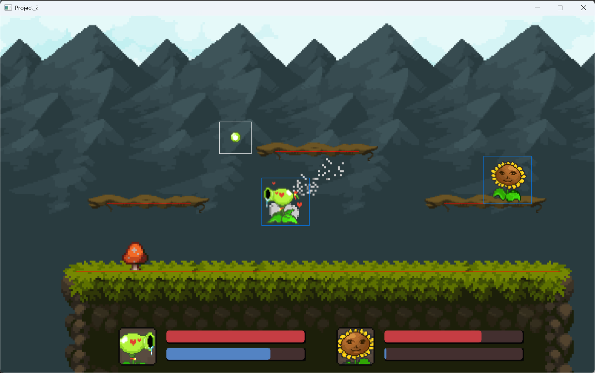
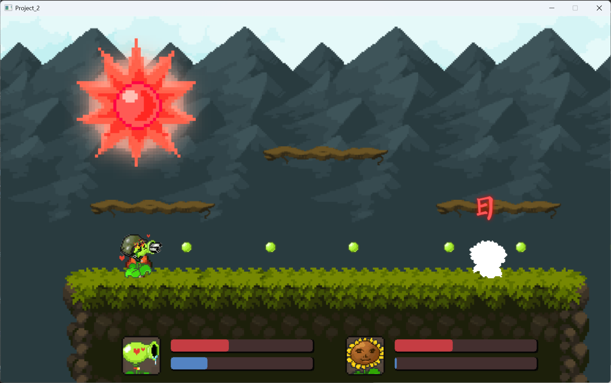
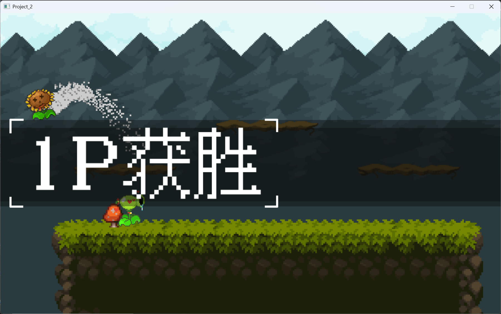

双人平台对战类型游戏
你可以点击以下链接查看与下载相关资源：
学习过程Markdown笔记文件：笔记文件（note.md）
项目源码可在GitHub仓库查看与下载：项目地址（github）
简介
这是跟随视频BV1AS421P7Ut基于C++语言使用简单EasyX图形库开发的双人平台对战类型游戏，总计代码行数大约2531行。
项目中使用场景管理器对原主函数中场景进行封装管理，同时项目简单完成了各种如角色类，子弹类，平台类，以及简单物理引擎，粒子与画面特效来完成平台及战斗需求。
其中需要的绝大部分组件使用自行编写封装，例如通过定时器保存回调函数关于类的引用匿名函数，或参数传递的方式对动画定时播放，对象技能CD定时，组件定时消失等功能的实现，其他还有更多组件如二维向量类记录坐标以及进行简单数学运算，摄像头类记录镜头坐标与世界坐标，动画类与图集类存储图片与动画方便进行管理等。
项目相关截图：
主菜单按下任意键开始
背景中剪影为向屏幕中间横向移动，可以通过对应玩家方向更改角色
进入游戏局内，两玩家头顶标识角色并一段时间后消失
Q键打开调试碰撞箱，移动可见粒子
释放大招击中对方并触发无敌帧闪烁
血量清空或掉出屏幕死亡玩家弹起与字幕滑入停顿后滑出，接下来将跳回至主菜单
技术栈与特点
开发语言与技术栈：
- C++ 100.0% —— 项目完全使用C++开发，运用面向对象编程思想，通过类封装如场景、角色、子弹等游戏元素，利用继承和多态实现场景切换、角色行为等多样化逻辑，提升代码复用性和可维护性。
- 图形库：EasyX图形库，用于游戏界面绘制和图像处理。
- 多媒体库：Windows Multimedia API引入`Winmm.lib`，使用其控制音频播放包括背景音乐和音效。
- 标准库：C++ STL的`std::vector`动态管理游戏对象，`std::function`实现回调函数，简化对象生命周期管理。
- 数据结构：自定义`Vector2`类处理二维坐标与向量运算，支持加减、缩放等操作，为角色移动、物理模拟提供基础。
- 内存管理：通过`new`和`delete`动态分配与释放子弹与玩家等对象，在游戏循环中定期清理无效对象，避免内存泄漏。
- 事件处理：基于Windows消息机制，通过`peekmessage`获取键盘和鼠标事件映射为游戏内交互。
- 工具类：封装`Timer`类实现定时功能，`Utils`类提供图像翻转、剪影生成、透明绘制等工具函数。
项目特点：
- 采用场景管理架构，通过`Scene`基类和`SceneManager`实现主菜单、选人、游戏局内等场景的切换，支持场景进入/退出时的初始化与资源释放。
- 实现完整的简单2D物理系统，包括重力模拟、平台碰撞检测、各类如各类形状与平台的碰撞、角色移动与跳跃，贴合真实物理规律。
- 设计多样化角色系统，通过继承`Player`基类实现不同角色的独特攻击方式和动画效果。
- 包含粒子特效系统，通过`Particle`类和定时器生成跑步尾迹、跳跃/落地特效，提升游戏视觉表现力。
- 完善的游戏流程，支持角色选择、生命值/能量值管理、胜负判定与结算界面，具备完整的对战体验。
- 适合学习C++游戏开发的进阶知识，包括面向对象设计、场景管理、物理模拟、资源管理等核心技术。